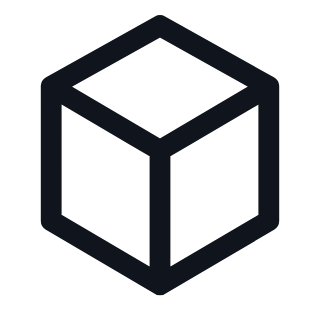
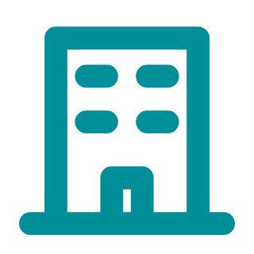

WIRTSCHAFTLICHKEIT
Ein Business Case,
der sich rechnen lässt.
Beispielrechnung gegenüber manueller Reinigung – berechnet über 60 Monate und 1.000 Betriebsstunden pro Jahr.
9.089 €GESCHÄTZTE EINSPARUNGEN
PRO JAHR
PRO JAHR
1,3 JahreAMORTISATIONSZEIT / ROI

1,54 Mio. m²GEREINIGTE FLÄCHE PRO JAHRJÄHRLICHER VERGLEICH
ROI- UND EINSPARUNGSRECHNER

ReinigungsleistungVon der Reinigungsfläche berechnete Kosten
Manuelle Scheuersaugmaschine
Anschaffungskosten 8.500 €
Wartung 30 €/Monat
GESCHÄTZTE JÄHRLICHE EINSPARUNGEN9.089 €entspricht 757 € / Monat
JÄHRLICHER VERGLEICH
Aktuelle Lösung 20.780 €
C5 · 60 Monate 11.691 €
AMORTISATIONSZEIT / ROI1,3 Jahre
FLÄCHE / JAHR1.544.400 m²
Individuelles Angebot erhalten